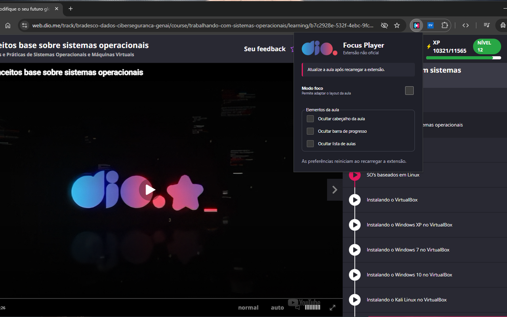
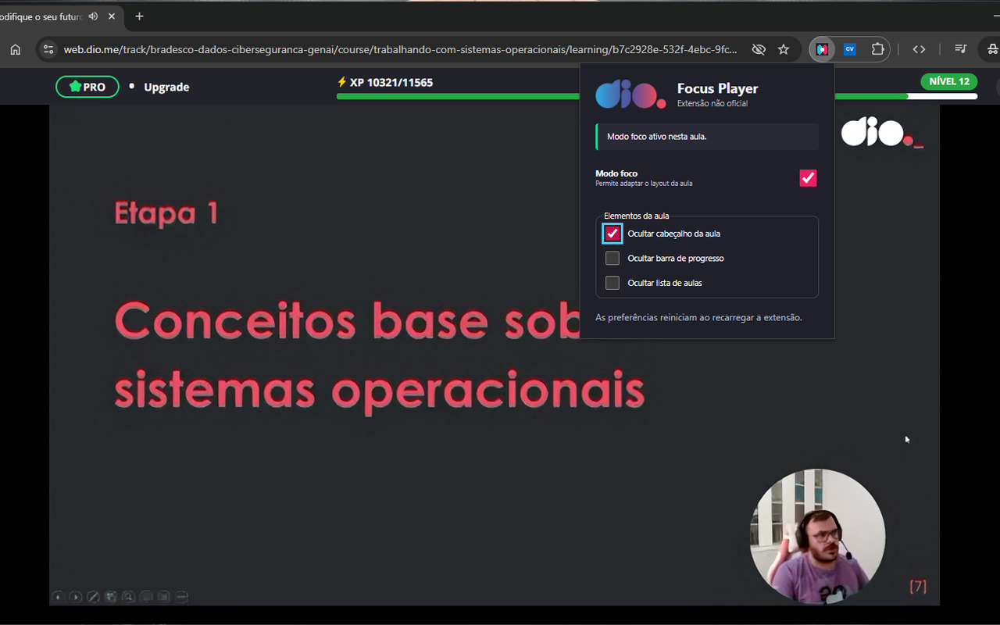
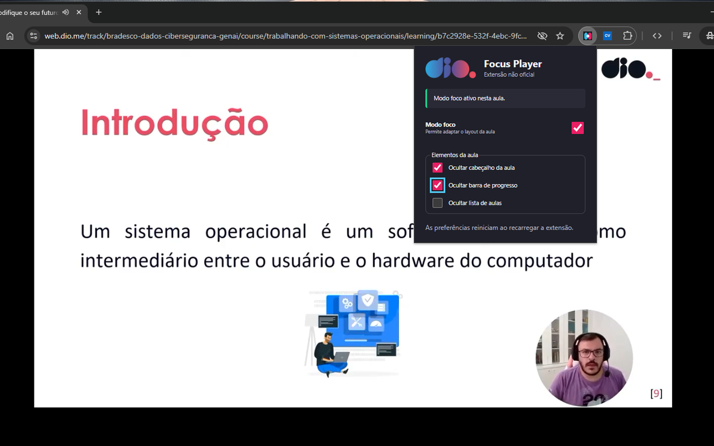
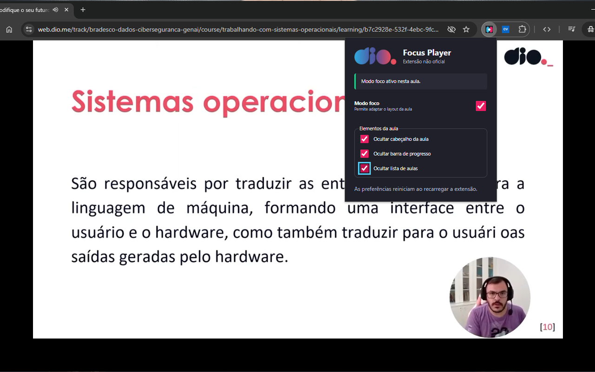

Modo foco
Reversível e previsívelO layout original volta com um clique, sem depender de recarregar a página.
Chrome Extension MVP
O DIO Focus Player reorganiza localmente a aula para reduzir a disputa por espaço entre vídeo, cabeçalho e lista de conteúdos. O resultado é uma experiência mais confortável para quem estuda com a tela dividida, faz anotações ou mantém várias janelas abertas ao mesmo tempo.

Modo foco
Reversível e previsívelO layout original volta com um clique, sem depender de recarregar a página.
Privacidade
Armazenamento localPreferências ficam no navegador do usuário e a extensão não envia telemetria.
A proposta é simples: reduzir ruído visual, preservar o que importa e deixar claro quando a página não é compatível.
O vídeo ganha prioridade e ocupa melhor a área disponível em janelas estreitas ou divididas.
A lista de aulas pode ser exibida ou ocultada conforme a necessidade de foco do estudante.
Não há backend, telemetria ou chamada remota. A adaptação acontece direto no navegador.
Landing, política de privacidade, screenshots e vídeo já estão organizados para a publicação.
As imagens abaixo estão alinhadas com o pacote de publicação. A coleção principal usa as versões em 1280x800 para manter nitidez na loja.



O repositório já organiza o que normalmente entra na revisão da loja: texto da listagem, política de privacidade, vídeo e capturas.
Política pública separada, aviso de extensão não oficial, screenshots em boa resolução, vídeo promocional, ícone instalado localmente e comportamento descrito de forma precisa.